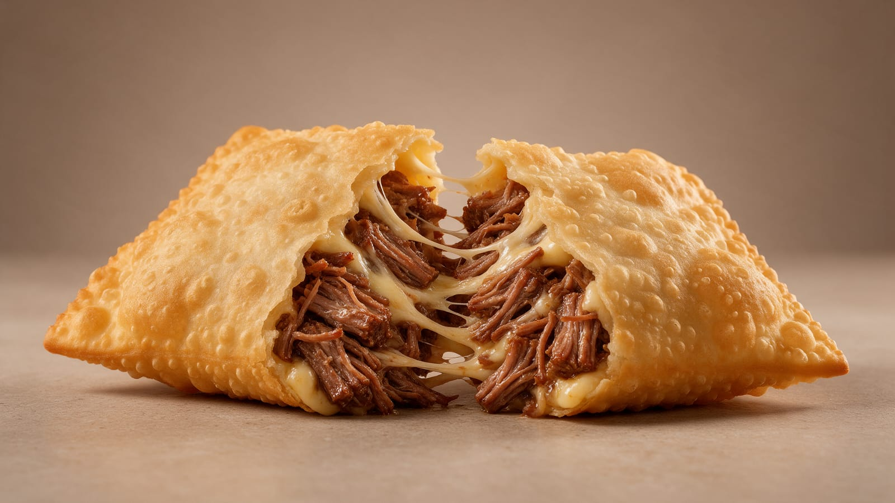
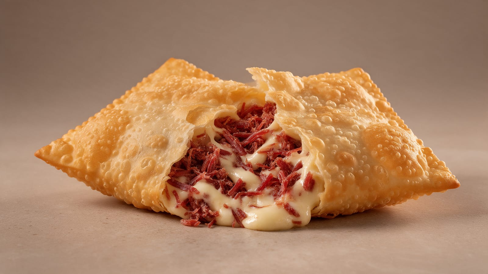
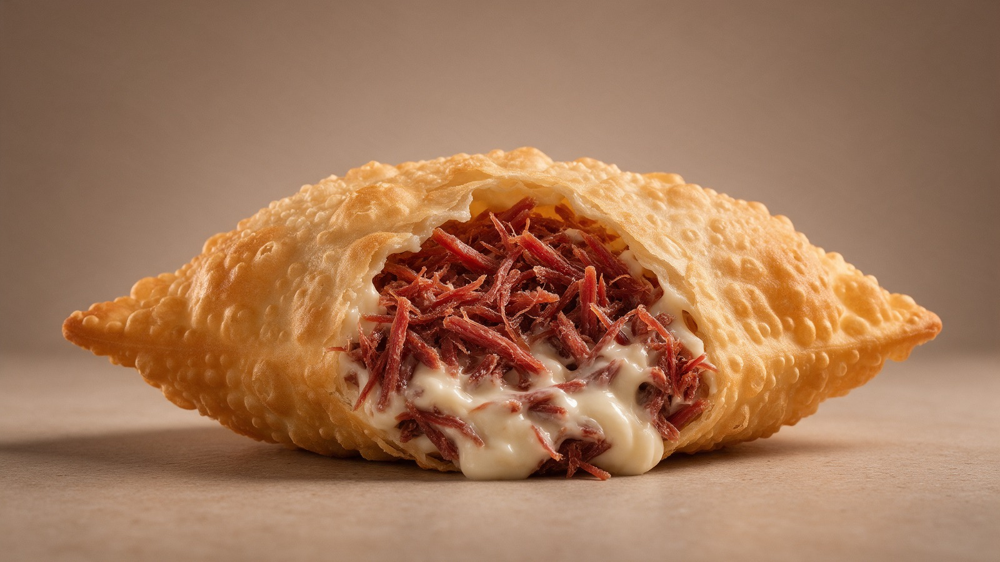
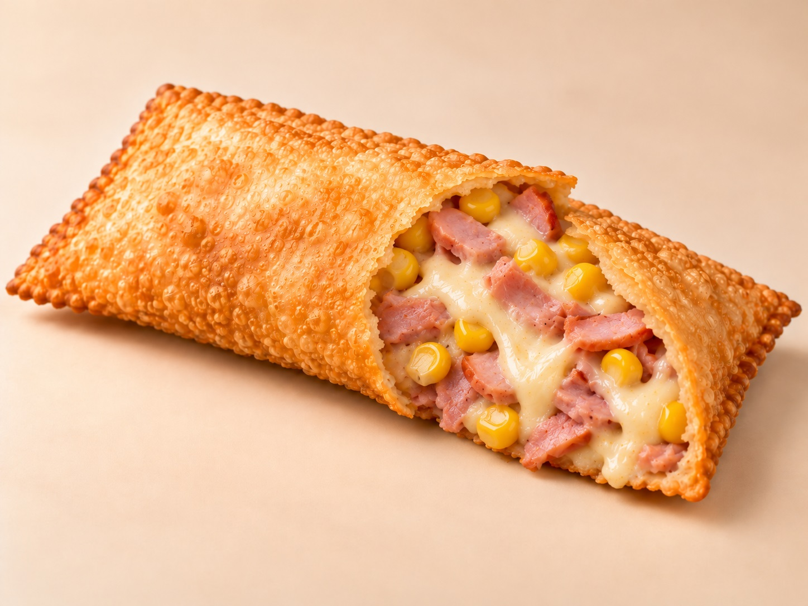
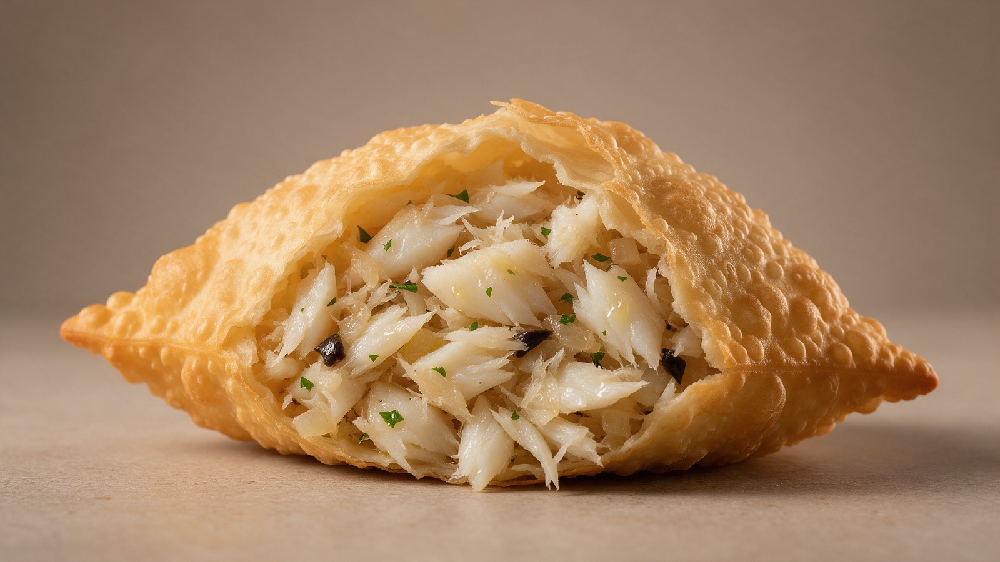
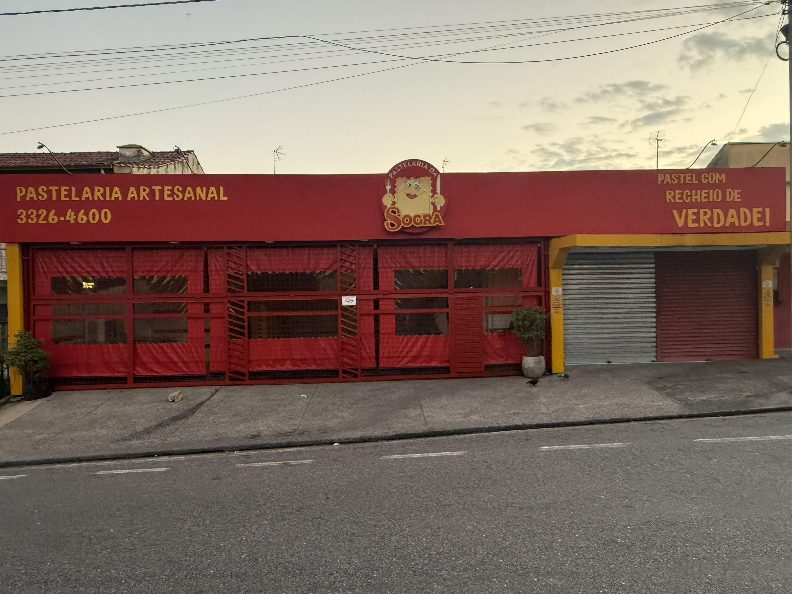
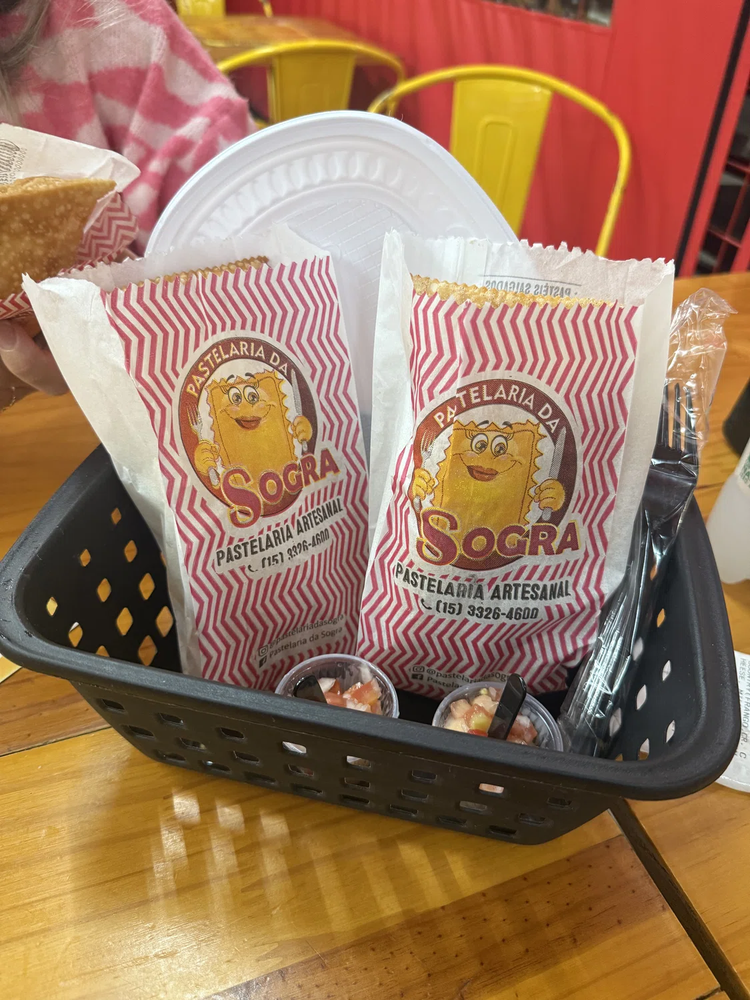
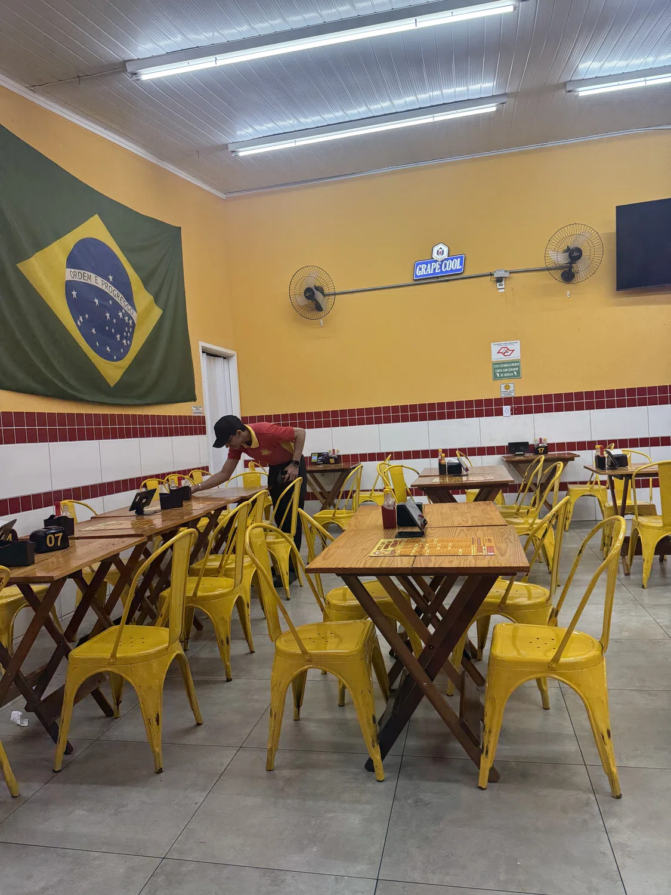
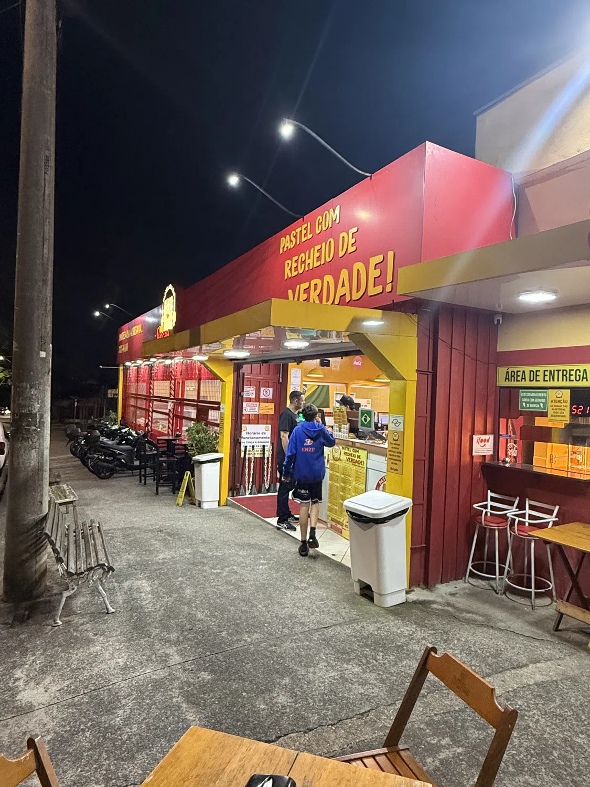
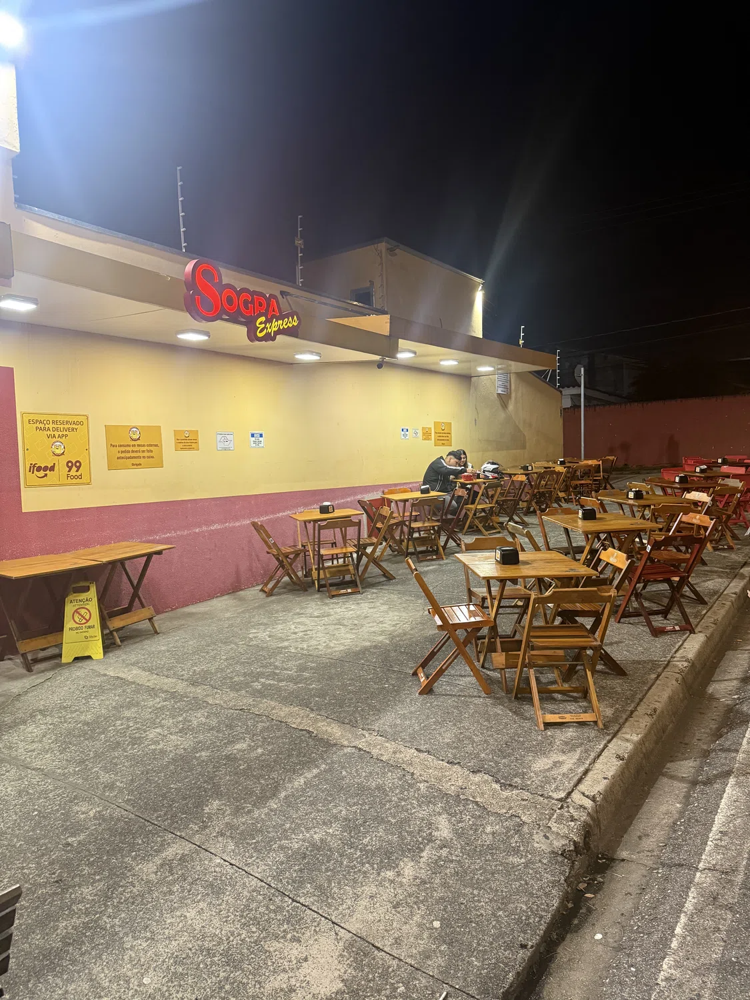

Costela e Mussarela
Costela e mussarela.
R$ 25,90
Crocante por fora, generoso por dentro. Conheça os sabores da Pastelaria da Sogra e descubra por que recheio aqui é coisa séria.

Explore nossas categorias e encontre o seu próximo favorito com a fartura tradicional da casa.
Pastéis tradicionais e especiais com recheios generosos.
Explorar categoria SOBREMESASOpções doces para completar seu pedido.
Explorar categoria ESPECIAISOpções com recheios vegetais. Consulte a disponibilidade de massa vegana.
Explorar categoria TRADICIONALBebidas para acompanhar seu pastel.
Explorar categoriaAlguns sabores para começar a sua melhor escolha gastronômica.

Costela e mussarela.

Carne seca com Catupiry.

Lombo canadense, Catupiry e milho.

Bacalhau, alho-poró, azeitonas pretas, purê de batata e azeite extra virgem.

Tradição familiar, massas artesanais, ingredientes selecionados e recheios generosos fazem parte da experiência da Pastelaria da Sogra.
Um lugar para reunir família e amigos e aproveitar um pastel feito com cuidado e muito recheio.
Conheça nossa históriaVeja o que os clientes dizem sobre a Pastelaria da Sogra no Google.
“Melhor pastel da cidade sem dúvidas... realmente cumpre o que promete... recheio do começo ao fim, ambiente muito agradável... super recomendo!!!”
“Primeira vez que fui e me surpreendeu a quantidade de recheio no pastel. Pastéis saborosos e massa sequinha. Também gostei do atendimento e do ambiente.”
“Pastel maravilhoso, com muito recheio, sempre tem fila para pedir aos fins de semana, porém, é muito rápido.”
Conheça um pouco do nosso espaço, dos nossos sabores e do dia a dia da Pastelaria da Sogra.




Faça uma visita ou trace sua rota até a Pastelaria da Sogra.
Terça a domingo
18h às 23h
Segunda-feira: fechado
Consulte o horárioConfira o cardápio e encontre o recheio que combina com a sua fome.